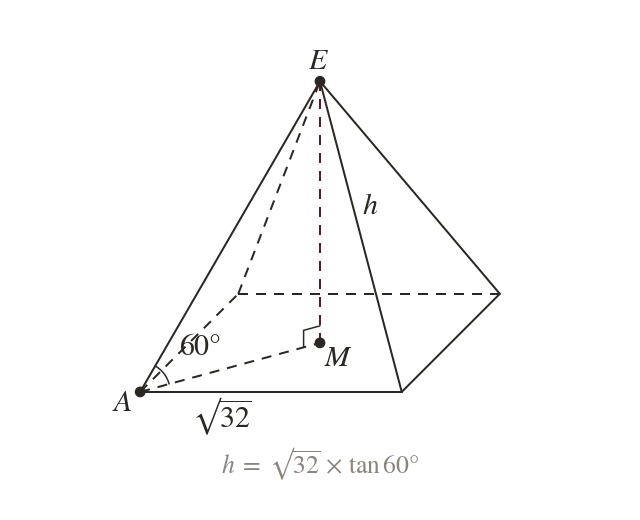
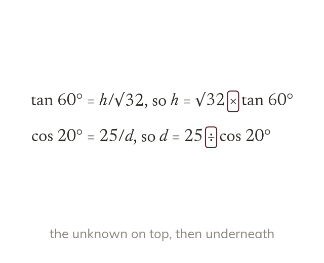
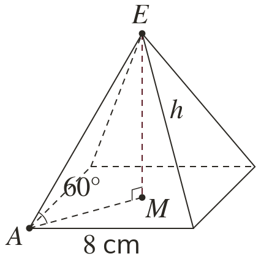
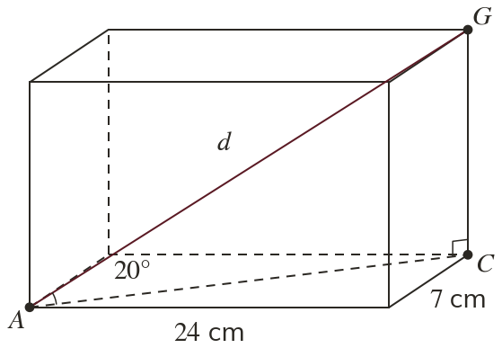
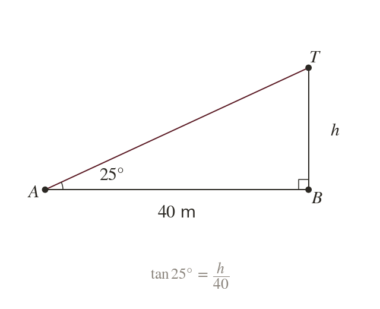
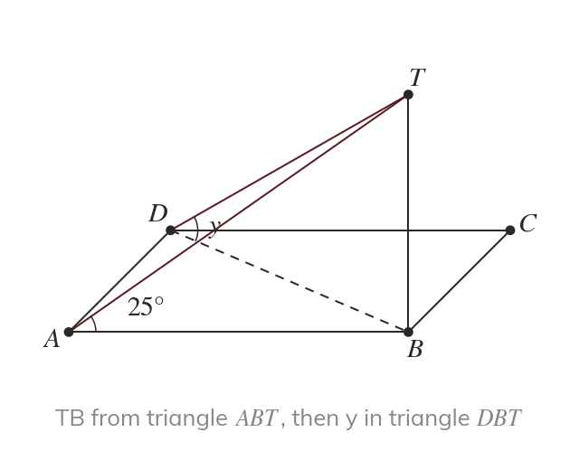
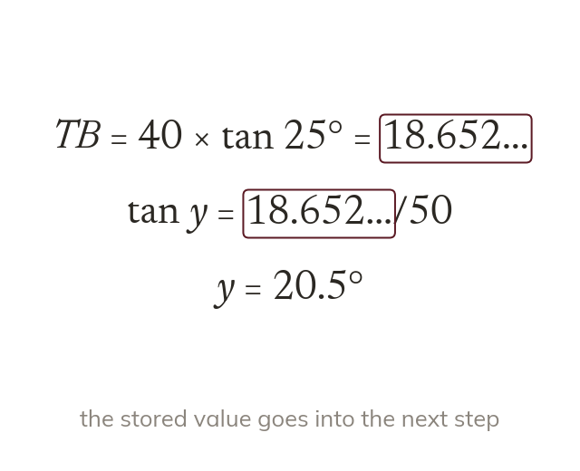
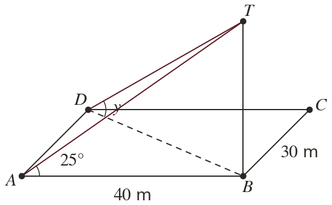
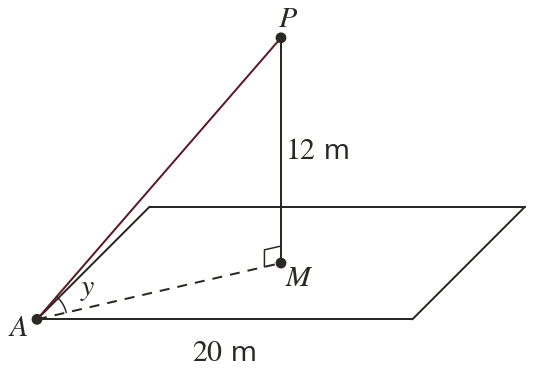

The angle gives a length
A given angle with the plane sits in the same right-angled triangle. One known side then gives the others.
Surveyors find heights and angles they cannot reach by chaining right-angled triangles. The answer from one triangle becomes a side of the next.
Work down the page at your own pace. Write every answer in your book first, then click to check it.
Read each card, then follow the worked examples one step at a time.

A given angle with the plane sits in the same right-angled triangle. One known side then gives the others.

Multiply when the unknown is on top of the ratio. Divide when it is underneath.


Pick an answer. If it's wrong, the feedback tells you which mistake it was.
Read each card, then follow the worked examples one step at a time.

An angle of elevation is measured up from horizontal ground. A vertical mast stands at right angles to the ground.

Many 3D problems are two right-angled triangles in a row. A side found in the first is a side of the second.

Carry the unrounded value into the next step. Round only the final answer.


Pick an answer. If it's wrong, the feedback tells you which mistake it was.
Finished? Next lesson: 10H.18.1 Direct and Inverse Proportion in Context.
Log in, then search for a code to practise that skill.
Videos, worksheets and more on each part of this lesson.